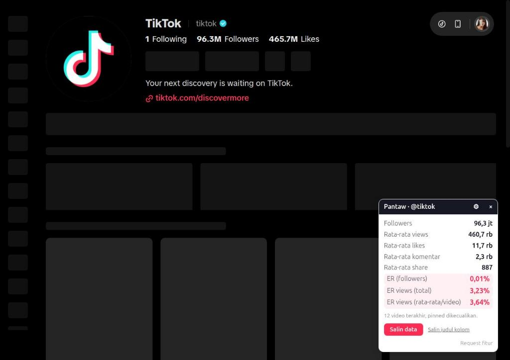
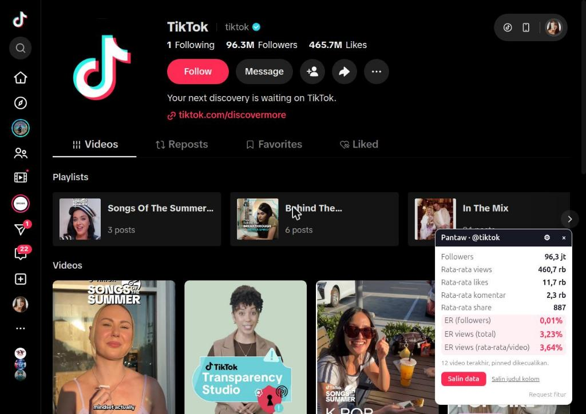
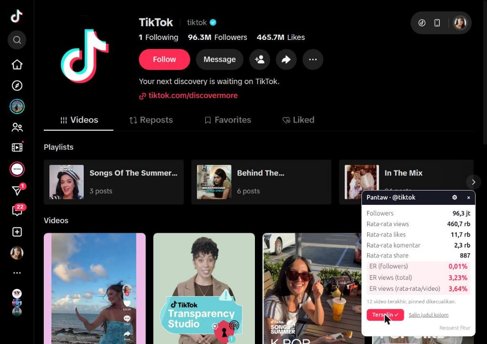
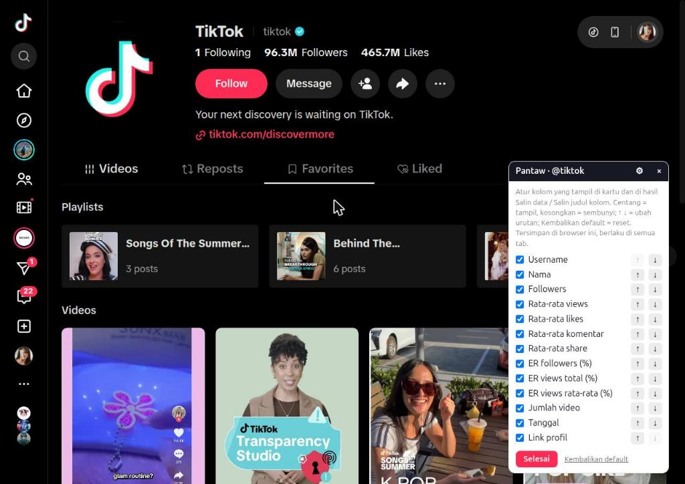

Pantaw




| A | B | C | D | E | F | G | H | I | J | K | L | |
|---|---|---|---|---|---|---|---|---|---|---|---|---|
| 1 | Username | Nama | Followers | Rata-rata views | Rata-rata likes | Rata-rata komentar | Rata-rata share | ER followers (%) | ER views total (%) | ER views rata-rata (%) | Jumlah video | Tanggal |
| 2 | @kreator_satu | Kreator Satu | 125000 | 48200 | 3900 | 210 | 95 | 3,29 | 8,72 | 8,95 | 12 | 2026-10-16 |
| 3 | @kreator_dua | Kreator Dua | 840000 | 210500 | 12600 | 640 | 410 | 1,58 | 6,48 | 6,71 | 12 | 2026-10-16 |